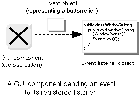

QUESTION 4:

(Thought Question: ) Does the Java system create an event object everytime the user interacts with a component?
Yes. The "listener object" is the object that has listener methods, possibly in addition to many other methods.
|  |
An event listener is an object that "listens" for events from a specific GUI component (which is also an object.) An event in Java is represented as an object. When the user generates an event, the Java system creates an event object. The event object is then sent to the listener that has been registered for the GUI component.
When an event is generated by the GUI component, a method in the listener object is invoked to respond to the event. In order to respond to events, your program must have done two things:
In the picture, the component is the "close button" of a frame. The event is a click on that button. An Event object is sent to the registered listener when the user clicks on the button. This is done by the Java system, which manages the GUI components. It is up to the listener to do something.
(Thought Question: ) Does the Java system create an event object everytime the user interacts with a component?